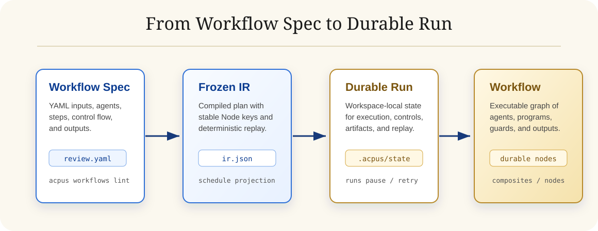

Quick StartInstall and run
Install the CLI, author a Workflow Spec with a Codex agent, and submit a durable local Run.
npm install -g acpus
acpus workflows lint review.workflow.yaml
acpus workflows run review.workflow.yaml \
--input '{"topic":"release readiness"}'
acpus runs visualizeWorkflow Specs combine Agent Steps, Program Steps, fanout, loops, switches, guards, approvals, outputs, and replayable run state.
agents:
reviewer:
use: codex
workflow:
steps:
- id: review
run: agent
use: reviewer
prompt: "Review ${{ input.topic }}"
output:
summary: stringRun ModelDurable local orchestration

Use ItCore workflow loop
01
Define
Write YAML specs with structured inputs, ACP agents, local programs, and output schemas.
02
Conduct
Run specs by path or Catalog ref. The local supervisor persists Node state, artifacts, and frozen IR.
03
Control
Pause, resume, retry, signal approvals, replay completed Runs, and inspect details in the TUI.
CatalogDynamic workflow templates
Project templates show larger agent-first patterns: research, adversarial review, option generation, implementation tournaments, and loop-until-green repair.
project:codebase-deep-researchFan out independent research agents and synthesize a final report.
project:adversarial-feature-implementation-reviewCross-examine an implementation from several review lenses.
project:solution-generate-filterGenerate minimal, balanced, and bold options, then rank them.
project:worktree-implementation-tournamentRun competing implementations in isolated worktrees and apply the winner.